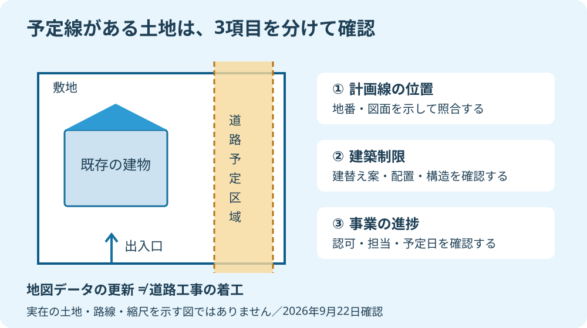

実家の土地に道路の予定線があると、持ち主は「売れないのか」「市に買ってもらえるのか」と両方を考えると思います。私は、そのどちらも地図の一本の線からは決めません。家を建てる条件と、道路を造る事業の進み具合を分けて確認します。
大石浩之（磐田市／不動産業）です。宅地建物取引士として、査定額を出す前にどこまで調べるかを整理します。国土交通省と磐田市の公開資料を確認した日は2026年9月22日です。本記事は特定の実家や路線の調査結果ではなく、売主の方に勧める確認手順です。
2026年6月の更新は、道路工事の開始ではない
国土交通省は2026年6月22日、不動産情報ライブラリのデータを6月24日に更新すると発表しました。更新予定一覧には都市計画道路が含まれ、データの整備時期は2024年度から2025年度へ変わると記されています。
ここでいう「整備時期」は、地図情報のデータを整えた年度です。道路工事を2025年度に始めた、あるいは2026年6月に着工するという意味ではありません。発表を読んだだけでは、磐田市のどの区間でいつ用地買収が始まるかは分かりません。
私は、都市計画情報を地図上で重ねて見られる仕組みを評価します。離れて住む家族も、実家の周囲にどの情報があるかを共有できる。仲介会社へ「この線は何ですか」と聞く入口になり、何も分からないまま査定を頼む状態から一歩進めます。
そのうえで、データが新しくなったことを、個別の土地の調査が終わったこととして扱わないでほしい。これが私の注文です。画面の線と敷地が重なって見えたら、土地を特定する地番と図面を持って確認する。画面だけでは残る疑問を、次の調査へ渡す使い方を勧めます。
磐田市も「都市計画による規制の概要」で、都市計画施設の予定地に入っていないかの確認を挙げています。市街化区域か、用途地域は何かという確認とは別の項目です。用途地域の色が住宅向けだから、予定線の検討が不要になるわけではありません。
磐田市の53条許可は、建て方を確認する手続き
磐田市の「都市計画法第53条建築許可」は、都市計画決定された道路や公園などの区域内で、建築物を建築する場合の申請を案内しています。道路がまだ造られていなくても、計画区域内では建築の確認が必要になる点が、売却条件に関係します。
市が掲載する許可基準には、階数が2以下で地階を持たないこと、主要構造部が木造・鉄骨造・コンクリートブロック造などであることがあります。加えて、容易に移転または除却できると認められることが必要です。木造2階建てという言葉だけで許可を保証できません。
| 確認すること | 売主が用意する材料 | まだ決めつけないこと |
|---|---|---|
| 計画区域との重なり | 地番、公図、敷地図 | 地図画面だけで確定した面積 |
| 建築の許可・制限 | 建物の配置、階数、構造 | 木造なら何でも建つという説明 |
| 事業の進捗 | 路線名と実家がある区間 | 用地買収や着工の時期 |
53条許可は、家の建築についての手続きです。土地を売るための万能な許可書ではありません。買主が建替えを考えるなら、その建物の配置や構造で確認する必要があります。売主が昔聞いた一般的な説明と、今回の建築計画への回答は分けて扱います。
市の添付書類には、位置図、公図写、配置図、平面図、断面図などが並びます。都市計画道路の場合は配置図に計画線を記入する案内です。つまり「道路にかかる」という口頭の説明を、敷地と建物の位置関係へ落とす資料が求められます。
私は査定の段階で、買主の希望が未定なら建築可否も未確認と書きます。住宅の階数や駐車場の置き方が決まっていないのに、「家は建てられます」と言い切るのは早い。用途地域や接道などの条件も併せ、個別の建築判断は市の担当窓口と建築士などの専門家に確認を。
計画決定と事業認可、予定日を分けて聞く
都市計画決定で道路の区域が定められていることと、その道路の事業認可があることは別の段階です。国土交通省関東地方整備局は、認可を受けて行う都市計画施設の整備事業を説明し、事業地内では建築や土地の形質変更などにも制限が生じるとしています。
私は窓口で、最初に「この地番はどの路線のどの区間にかかりますか」と確認するよう勧めます。次に、事業認可の有無、認可区域との重なり、事業主体、用地交渉や工事の予定を順に聞きます。同じ路線名でも、実家が関係する区間についての回答かを確かめます。

予定が示されないときは「未定」と記録します。未定は、道路が永久にできないという意味ではありません。反対に、計画が存在することだけで、近い日に必ず買収されるとも言えません。予定を聞いた日と回答の対象区間を残すと、後から照合できます。
磐田市の「都市計画道路の見直し」ページには、変更・廃止の状況を確認する図が掲載されています。ただし、掲載図の基準日は2019年11月1日です。2026年9月時点の実家の条件を、この古い図だけで確定してはいけません。最新の計画変更の有無を窓口へ聞くための手がかりとして使います。
まち全体の方向を示す計画と、実家に掛かる具体的な制限も区別します。磐田・袋井の都市計画マスタープランの読み方と合わせ、どの資料が何を示しているかをそろえてください。
査定は、線の位置と残る土地の使い方まで見る
都市計画道路が関係する土地の査定では、予定区域が敷地のどこにかかり、建物や出入口にどう関係するかを整理します。仮に将来一部が道路になる場合も、残る土地の形と利用条件は物件ごとに異なります。一律の値引き率を出せる材料ではありません。
私はこう考えます。「予定線がある、それだけで安くする」という査定は、説明が足りません。不利な条件を隠すつもりはありません。ただ、何が建てにくく、何が未確定で、それを査定にどう織り込んだかまで説明して、初めて売主が判断できます。
たとえば、予定区域が敷地の端にかかる場合と、出入口や建物の配置に関わる場合を想像してください。これは架空の比較です。かかる面積だけが同じでも、車の出入りや建替え案への影響が同じとは限りません。面積の割合だけをそのまま価格の減額率にする説明には、私は根拠を求めます。
私にも迷いはあります。事業の時期が未定なら、将来の使い方をどこまで価格に織り込むか。確認できない将来を、もっともらしい金額で埋めたくはありません。現時点で確認できた条件で査定し、想定が変わる部分を分けて記すほうが誠実だと考えます。
販売図面にも、確認した路線名や制限を分かる形で引き継ぎます。図面の見方は、売主が確認したい販売図面の項目で整理しています。私は、未確認の条件を「問題なし」に置き換えず、買主側の調査につながる説明を残したいと思います。
磐田の窓口へ、地番と図面を一組にして相談する
磐田市で予定線を確認する入口は、市役所の都市計画課です。市の業務案内では都市計画道路を扱い、電話は0538-37-4907、窓口は国府台3-1の西庁舎2階とされています。事業の担当が別なら、該当路線の問い合わせ先へつないでもらいます。
中泉の実家でも見付の土地でも、地名だけでは対象を確定できません。住居表示と土地の地番を混同せず、公図や手元の敷地図を用意します。中泉で用途地域を確認する手順も併用し、建築条件を一つずつ整理します。
- 今日できる準備として、地番と所在地、手元の図面を一組にする。
- 路線名、計画線、事業認可と予定日を別の欄で質問する。
- 確認日と回答の範囲を残し、査定担当者へ渡す。
富士ヶ丘サービスは、磐田市・袋井市を中心に介護と不動産を一体で相談できる窓口を設けています。施設入居や実家じまいの予定があっても、未確認の道路条件を後回しにしない。家族が困らない売却のため、私は査定額の前提から一緒に整理します。
売るかどうかは、調べた後で決められます。私は、将来の買収を当てにして待つことも、予定線を怖がって値引きを急ぐことも勧めません。まず実家の区間について回答を一つ得る。その材料から次の段取りを案内します。重要事項や税務・登記・相続の個別判断は専門家に確認を。